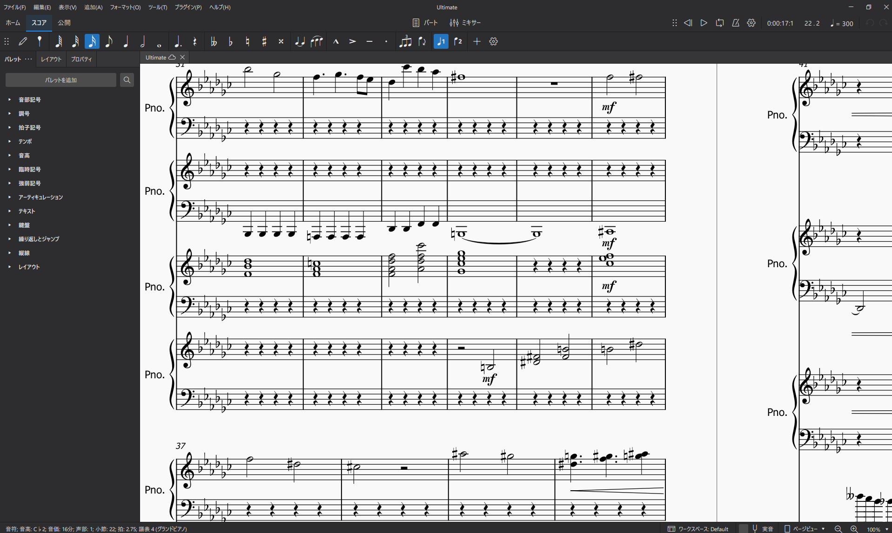
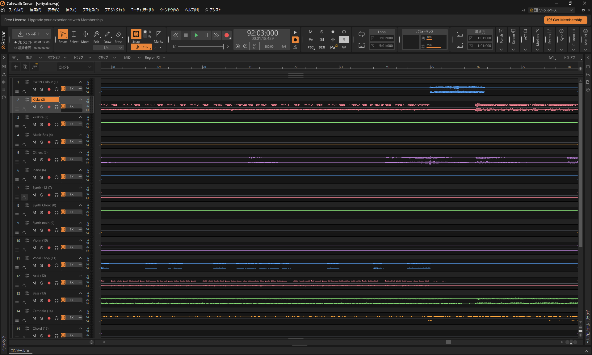
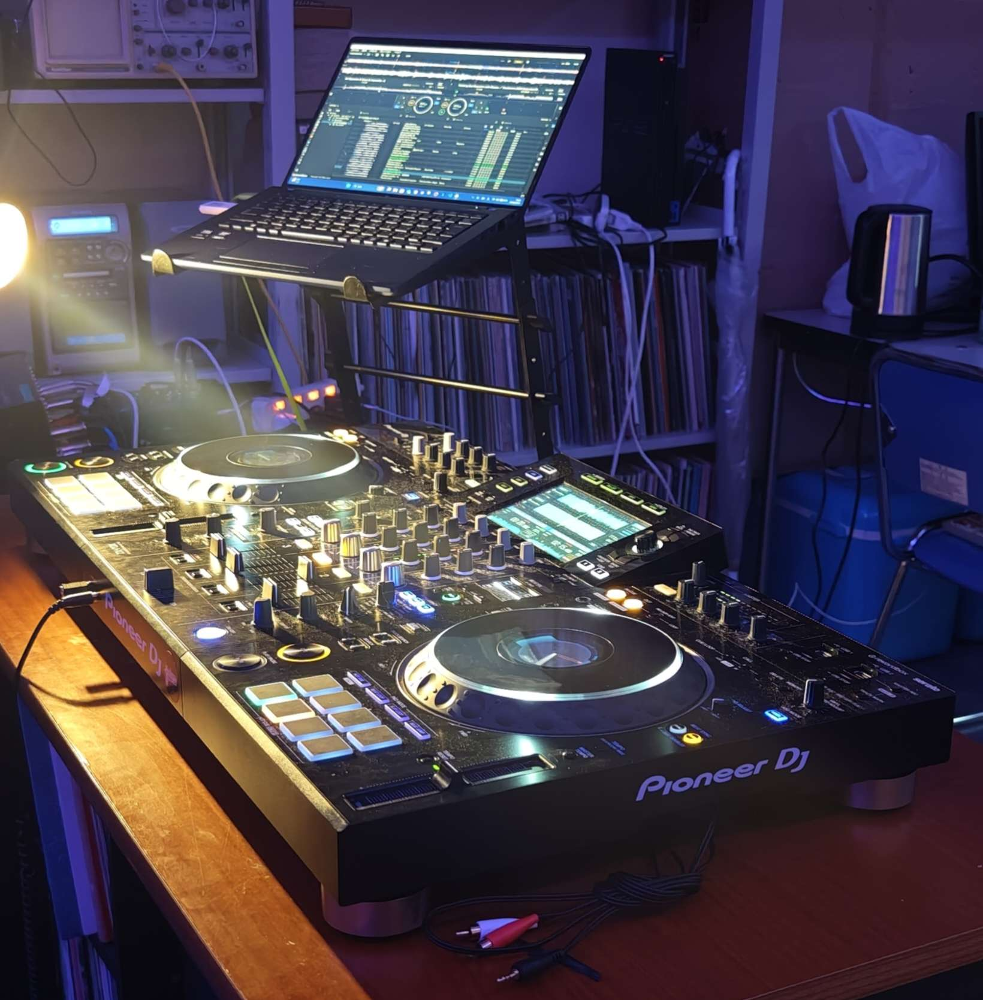
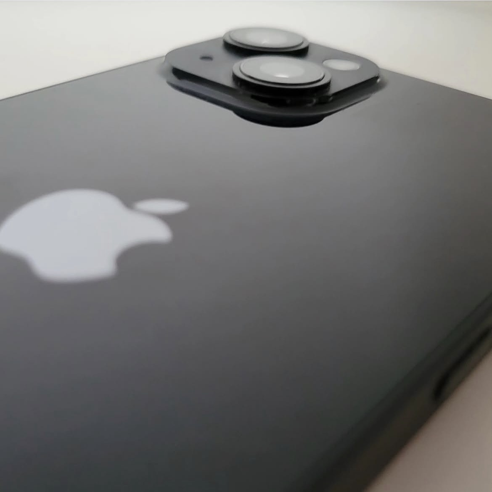
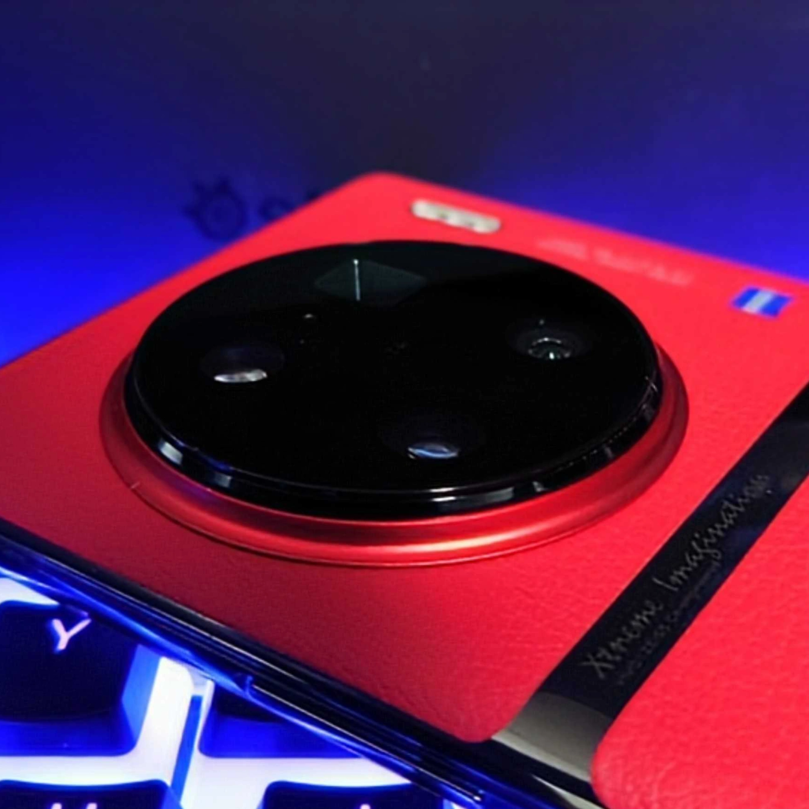
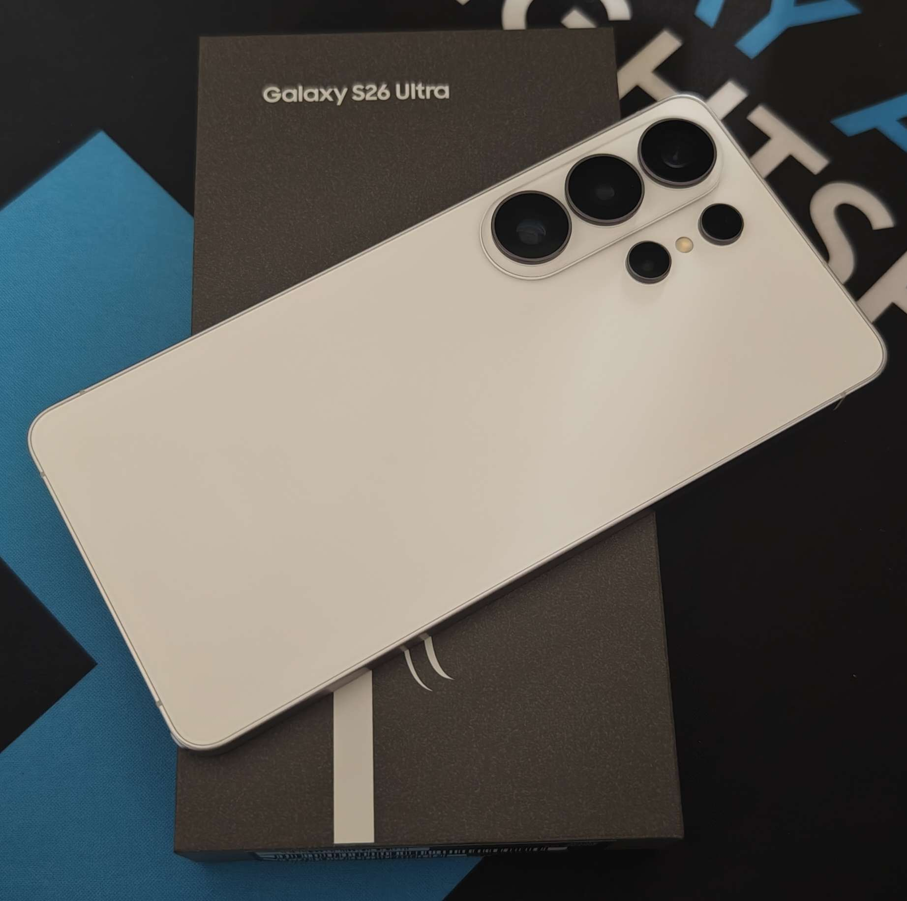

小学1年生からピアノを始める。中学2年生で一旦ピアノから離れるが、中学3年生でMuseScoreという楽譜作成ソフトに触れ、作曲に興味を持つ。それからMuseScoreでピアノ曲を中心として作り、2023年に初めてのオリジナル曲「無題」を投稿。その後はピアノ曲をいくつか制作、投稿していた。
Profile
- 名前
- MoRi/盛岡
- 生年月日
- 2007年12月25日
- 趣味
- 音楽（作曲、鑑賞、ピアノ）、ガジェット（コンピューターなど）、ゲーム、旅行 など
- 使用DAW
- CakeWalk Sonar,GarageBand(Mac)
- 特技
- iPhoneの機種を当てること
- 持っているスマホ（2026/5/18現在）
- Galaxy S26 Ultra/vivo X90 Pro+/vivo X Fold3 Pro/vivo X100 Pro/Galaxy S20/iPhone14
About(Composer)

高校1年生の時、チュウニズムという音楽ゲームにて、HARDCOREというジャンルを認知する。それからHARDCOREや電子音楽にハマり、作曲の方向性が定まる。

高校1年生の夏、PCを借りて初めてCakewalkというDAWに触れ、独学でDAWの使い方や音楽理論を学ぶ。そして、2024年、初めてのHARDCORE曲「M1dnight Melody」を制作、リリースする。

以来、HARDCOREやSPEEDCOREを中心とした楽曲を制作している。また、2026年に大学へ入学し、DJサークル「Aizu-DMC」に入部。DJとしての活動を本格的に開始した。最近は、公募への応募や5人での合作などをしていて、徐々に活動を広げている。

About(Gadget)
高校1年生の春、親に初めてのスマホであるiPhone14を買ってもらう。当時は、Apple信者だったため、iPhoneにしか興味がなかったが、高校時代の友人が持っていたGalaxy端末に興味を持ち、Androidに手を出し始める。

高校2年生の夏、Galaxy S21を購入。これがきっかけで、Android端末にどんどんハマっていく。そこから、いろいろな端末に手を出し始める。日本だけでなく、海外の端末も積極的に購入するようになる。
また、スマホ以外のガジェットにも興味を持ち、MacなどのPCやタブレットなども購入するようになる。最近では、スマートウォッチやワイヤレスイヤホンなども購入している。

現在は、Windows PCとMacの両方を所有しており、用途に応じて使い分けている。スマホは、Galaxy S26 Ultraをメインで使っているが、vivo X Fold3 ProやiPhone14などの端末もサブ機として使用している。また、最近はスマホの修理にも興味を持ち、いくつかの端末を分解して修理することもある。
